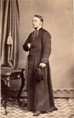

Beaubien-Perrault-Benington - Person Sheet
Beaubien-Perrault-Benington - Person Sheet

NameThomas Aubert De Gaspé
Birth28 Jul 1820, Québec, Québec20
Occupationprêtre
FatherPhilippe Joseph Aubert De Gaspé (1786-1871)
MotherSusanne Allison (~1795-1847)
Notes for Thomas Aubert De Gaspé
Pretre 1847. Curé fondateur de St-Apollinaire, comté de Lotbinière.
[1851 census Canada] St. Eloi, Co Rimouski
THomas de Gaspé, ptre cure, 32.
Heritier de THomas Allison vers 1886.
105 Incapable de chanter un service parce qu’il était ivre, s’en va en juin aux Etats-Unis. 1868. (Vicaire à N-D de Lévis en 1869. “Assistant” à St-Joseph de Lévis 1868-1870)
Inhume dans un caveau de l’eglise de Levis ou il avait été curé. Deux pages de signatures
http://search.ancestry.com/iexec/?htx=View&r=a...src=&pid=4982519
106 [UK Probate, 1892] De Gaspé, the Reverend Thomas Aubert of the City of Lebis (sic) QUebec Canada died 9 Mar 1889 Probate London 15 Feb to the Reve Charles Edouard Carrier clerk effects £85 5 s 5 d in England
Vente de ses droits a toutes les successions de Gaspe a TJ Loranger en echange d’une rente a vie de 12 louis (48 $) 24/8/1871, Notaire Chaperon, Joseph-Alphonse-Elzéar (Élysée)
https://www.ancestry.com/interactive/61062/03Q_CN3...Q_CN301S299P_01_1638
[1851 census Canada] St. Eloi, Co Rimouski
THomas de Gaspé, ptre cure, 32.
Heritier de THomas Allison vers 1886.
105 Incapable de chanter un service parce qu’il était ivre, s’en va en juin aux Etats-Unis. 1868. (Vicaire à N-D de Lévis en 1869. “Assistant” à St-Joseph de Lévis 1868-1870)
Inhume dans un caveau de l’eglise de Levis ou il avait été curé. Deux pages de signatures
http://search.ancestry.com/iexec/?htx=View&r=a...src=&pid=4982519
106 [UK Probate, 1892] De Gaspé, the Reverend Thomas Aubert of the City of Lebis (sic) QUebec Canada died 9 Mar 1889 Probate London 15 Feb to the Reve Charles Edouard Carrier clerk effects £85 5 s 5 d in England
Vente de ses droits a toutes les successions de Gaspe a TJ Loranger en echange d’une rente a vie de 12 louis (48 $) 24/8/1871, Notaire Chaperon, Joseph-Alphonse-Elzéar (Élysée)
https://www.ancestry.com/interactive/61062/03Q_CN3...Q_CN301S299P_01_1638